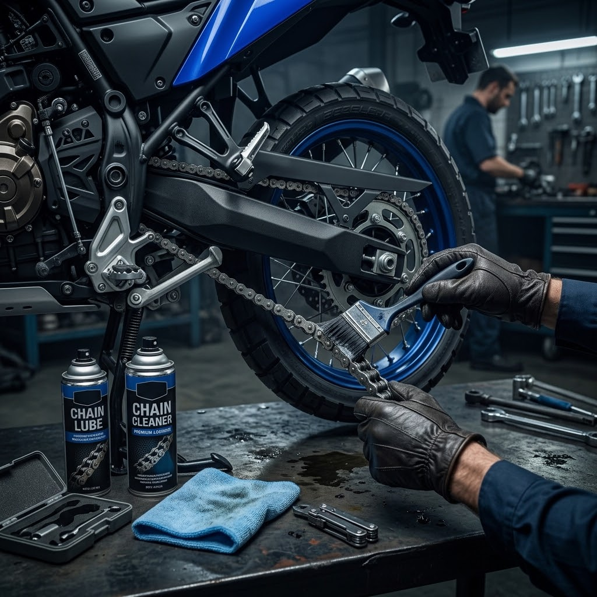
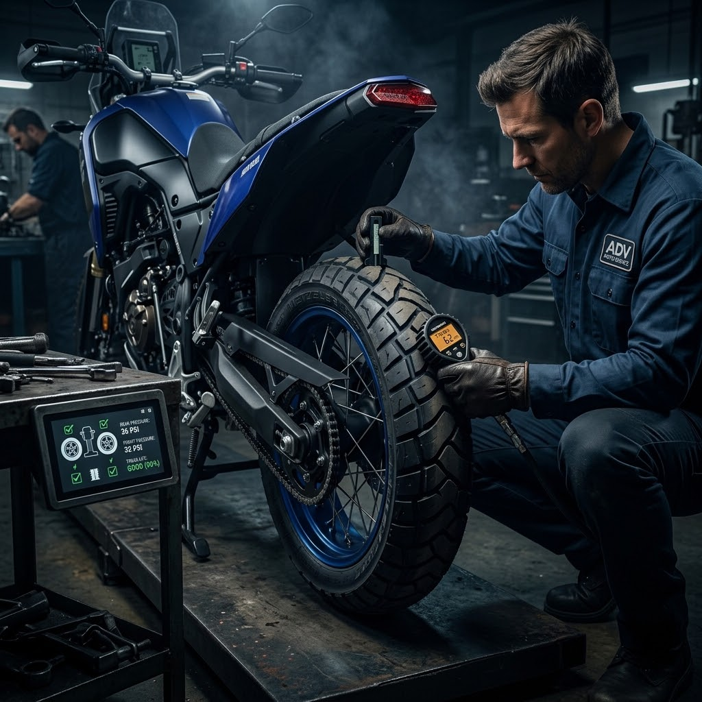
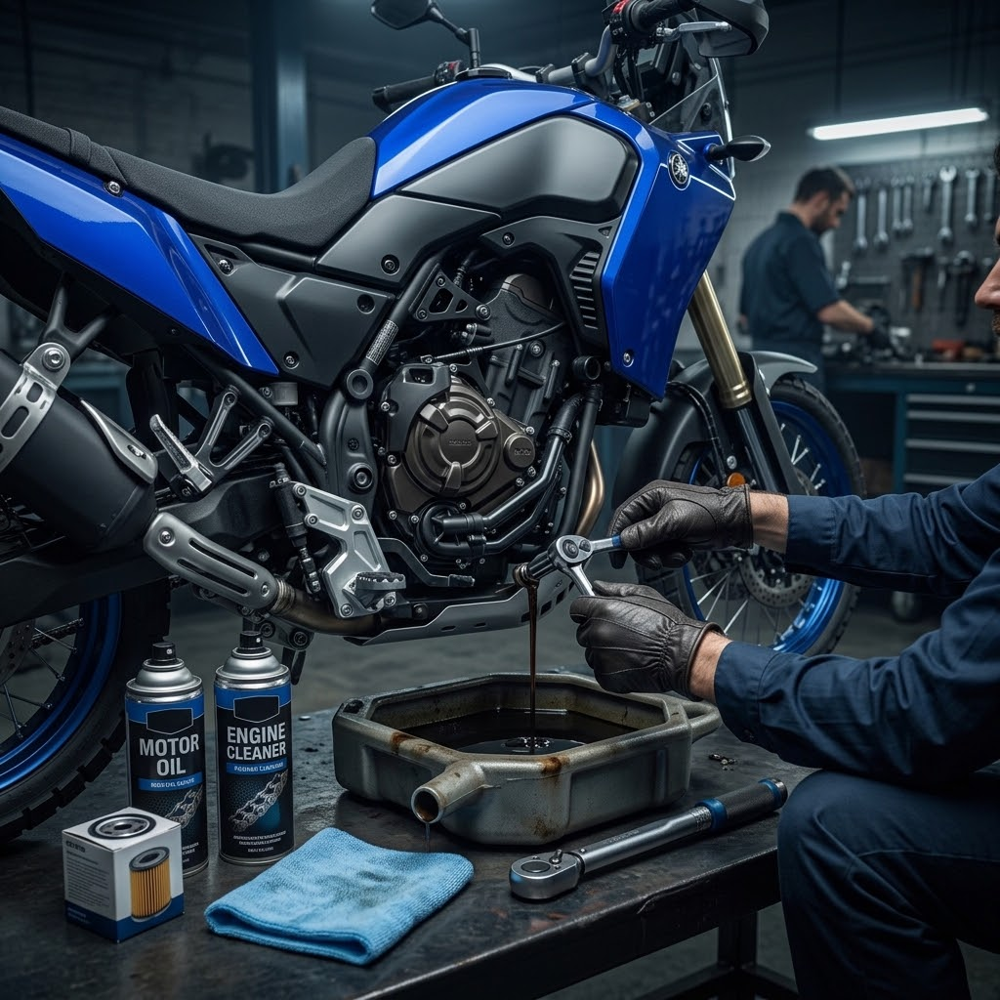
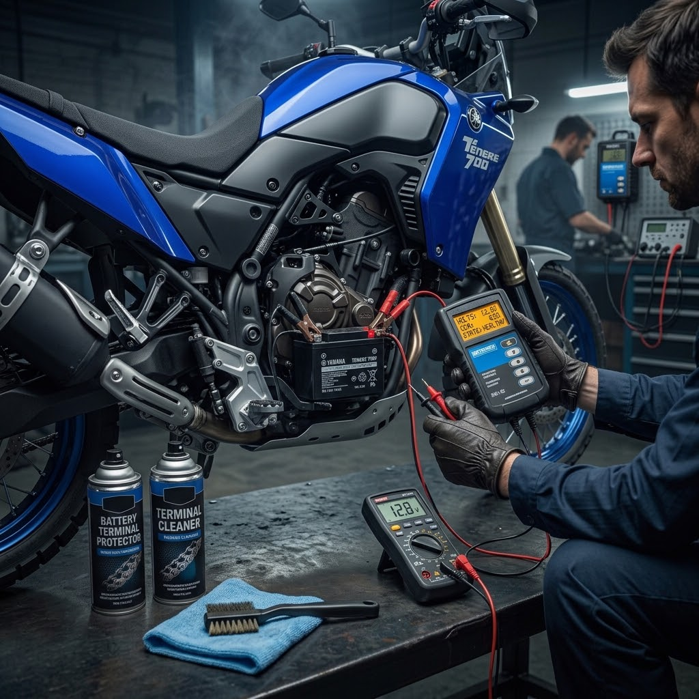
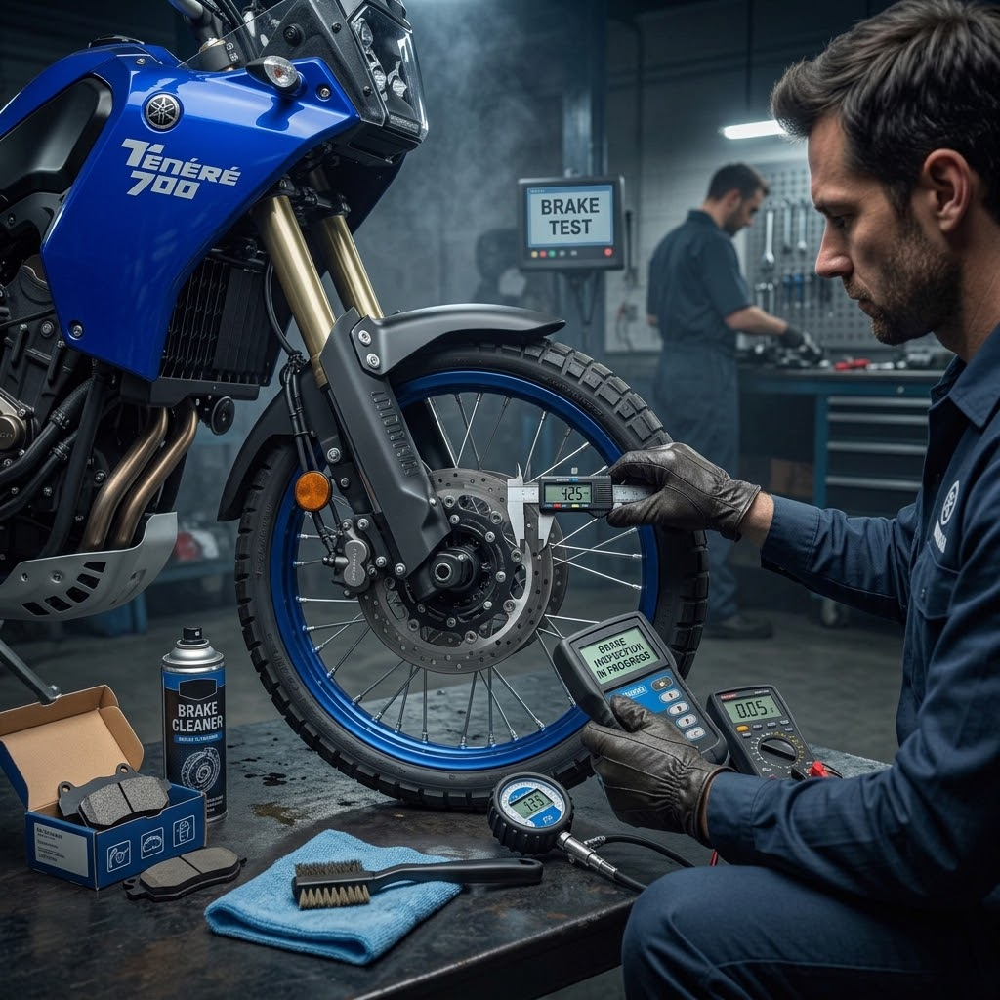
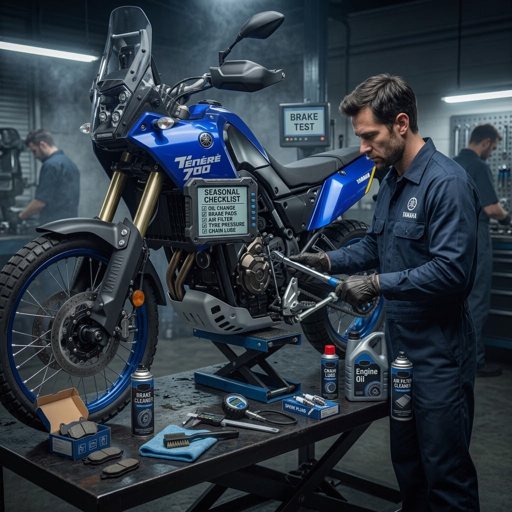

Motosiklet Bakımı

Zincir Bakımı
Zincir temizliği, yağlama ve bakım sırasında dikkat edilmesi gereken temel noktalar.
Rehberi Gör
Lastik Kontrolü
Lastik basıncı, diş durumu ve sürüş öncesi yapılması gereken temel kontroller.
Rehberi Gör
Motor Yağı
Motor yağı seviyesini kontrol etme ve bakım zamanlarını takip etme hakkında bilgiler.
Rehberi Gör

Fren Kontrolü
Fren balataları, diskler ve fren sisteminde kontrol edilmesi gereken noktalar.
Rehberi Gör
Sezonluk Bakım
Motosikleti uzun süre kullanmayacağın dönemlerde yapılabilecek temel bakım işlemleri.
Rehberi Gör